Für Unternehmen und Behörden ist es unerlässlich, dass Informationen korrekt vorliegen und vertraulich behandelt werden. Entsprechend ist es wichtig, dass technische Systeme, die diese Informationen beherbergen und verarbeiten reibungslos funktionieren und wirksam gegen vielfältige, immer wieder neuartige Gefährdungen geschützt sind.
Im IT-Grundschutz wird detailliert beschrieben, welche Anforderungen erfüllt sein müssen, um kostengünstig ein geeignetes Sicherheitsniveau zu erreichen. Er bietet außerdem eine anerkannte Methodik, mit der auf effiziente Weise ein zu den Gegebenheiten passendes Sicherheitskonzept entwickelt und überprüft werden kann.
Informationssicherheit muss vielfältigen Herausforderungen gerecht werden:
Kern besteht aus:
Der BSI-Standard 200-1 befasst sich mit Managementsystemen für Informationssicherheit (ISMS). Er legt die grundlegenden Anforderungen fest, die ein ISMS erfüllen muss, einschließlich seiner Komponenten und der zu bewältigenden Aufgaben. Dieser Standard orientiert sich an der Norm ISO 27001 und anderen aktuellen internationalen Standards zur Informationssicherheit.
Der BSI-Standard 200-2: IT-Grundschutz-Methodik bietet methodische Anleitungen für die schrittweise Implementierung eines Informationssicherheits-Managementsystems (ISMS) in einer Institution. Er beschreibt effiziente Verfahren zur Konkretisierung der allgemeinen Anforderungen des BSI-Standards 200-1 und der zugrundeliegenden Norm ISO/IEC 27001.
Der BSI-Standard 200-3: Risikoanalyse auf der Basis von IT-Grundschutz beschreibt ein vereinfachtes Verfahren zur Risikoanalyse im Vergleich zu anderen Methoden. Diese Methode ist besonders wichtig und nützlich, wenn es darum geht, Komponenten abzusichern, bei denen unklar ist, ob die Erfüllung von Basis- und Standardanforderungen für eine ausreichende Sicherheit ausreicht.
Das IT-Grundschutz-Kompendium ist ein umfangreiches, modular aufgebautes Werkzeug und Nachschlagewerk für Informationssicherheit. Es enthält IT-Grundschutz-Bausteine, die in zehn thematische Schichten unterteilt sind. Zusätzlich bietet das BSI weitere Ressourcen an, darunter IT-Grundschutz-Profile und Musterlösungen für spezifische Anwendungsbereiche. Diese können als Vorlage für die Entwicklung von Sicherheitskonzepten dienen. Eine ISO 27001 Zertifizierung auf der Basis von IT-Grundschutz kann nachweisen, dass die Informationssicherheitspraktiken und Maßnahmen einer Institution den anerkannten Standards entsprechen.
Institutionen haben unterschiedliche Voraussetzungen für die Umsetzung von Informationssicherheit. Kleinere und mittlere Institutionen haben oft nicht die Ressourcen für eine umfassende Absicherung. Daher kann es für sie sinnvoller sein, sich zunächst auf grundlegende Sicherheitsmaßnahmen oder den Schutz besonders wichtiger Bereiche zu konzentrieren. Der BSI-Standard 200-2 bietet drei Varianten der IT-Grundschutz-Methodik, um ein Sicherheitsniveau zu erreichen, das den Anforderungen und Gegebenheiten einer Institution entspricht.
Für effektive Informationssicherheit ist mehr als nur einzelne Maßnahmen nötig; es bedarf
eines Managementsystems für Informationssicherheit (ISMS), das sicherstellt, dass alle Maßnahmen koordiniert
und kontrolliert werden. Bestehend aus folgenden Komponenten:
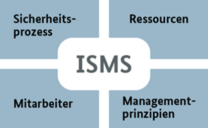
Die Informationssicherheit ist ein kontinuierlicher Prozess, der ständige Anpassungen erfordert. Veränderungen in Verfahren, gesetzlichen Rahmenbedingungen, Technologien und Schwachstellen erfordern eine fortlaufende Überprüfung. Der Sicherheitsprozess durchläuft verschiedene Phasen im Lebenszyklus.
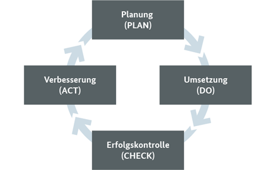
| Phase | Beschreibung |
|---|---|
| PLAN | Planung von Sicherheitsmaßnahmen |
| DO | Umsetzung der Maßnahmen |
| CHECK | Erfolgskontrolle, Überwachung der Zielerreichung |
| ACT | Beseitigung von Defiziten, Verbesserungen |
Der PDCA-Zyklus nach William Edwards Deming ist ein bewährter Bestandteil vieler Managementsysteme, einschließlich des Qualitäts- und Umweltmanagements. Die Erfolgskontrolle und kontinuierliche Verbesserung sind wichtige Prinzipien im Sicherheitsprozess. Dokumentation ist entscheidend, um Entscheidungen nachvollziehbar zu gestalten und Missverständnisse zu vermeiden. Eine elektronische Form der Dokumentation bietet Vorteile, und die Informationsklassifizierung hilft, den Umgang mit vertraulichen Informationen zu regeln.
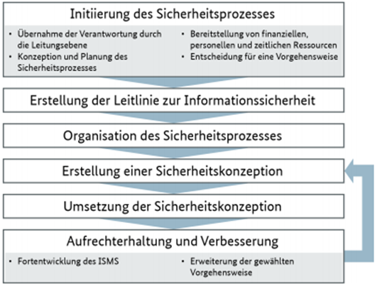
Ein ISMS (Information Security Management System) hat folgende Aufgaben:
Die oberste Leitungsebene trägt die Gesamtverantwortung für ein angemessenes ISMS. Auch wenn sie operative Aufgaben delegiert und die Mitarbeiter zu sicherheitsbewusstem Verhalten anhält, entbindet sie dies nicht von der Gesamtverantwortung.
Zuständigkeit eines Informationssicherheitsbeauftragten (ISB):
Die Sicherheitsanforderungen für industrielle Steuerungssysteme (ICS) sind spezifisch und unterscheiden sich deutlich von denen in der Büro-IT. Für die Planung, Implementierung und Überwachung von Sicherheitsmaßnahmen im ICS-Bereich ist umfangreiches Fachwissen erforderlich. Daher ist es ratsam, in Produktionsunternehmen einen erfahrenen ICS-Informationssicherheitsbeauftragten (ICS-ISB) zu ernennen, der eng mit dem Informationssicherheitsbeauftragten (ISB) zusammenarbeitet und in die Sicherheitsorganisation integriert ist.
Aufgaben des IS-Management-Teams:
Im Unternehmen sollte ein Sicherheitsverantwortlicher ernannt werden, beziehungsweise jemanden, der die
Sicherheitsrechtlinien formuliert. Jener sollte nicht derjenige sein, der diese Richtlinien umsetzen muss.
Schutzziele werden von ihm definiert, zum Beispiel Ziele zu:
Es wird empfohlen, eine klare Sicherheitsorganisationsstruktur im Unternehmen zu etablieren, damit Mitarbeiter bei Datenschutzproblemen das zuständige Personal kontaktieren können. Getroffene Sicherheitsmaßnahmen sollten regelmäßig auf ihre Aktualität und Korrektheit überprüft werden. Dazu gehören regelmäßige Trainings für Mitarbeiter und häufige Stichproben in verschiedenen Unternehmensbereichen. Es kann auch hilfreich sein, externe Dienstleister für Penetrationstests oder Schwachstellenanalysen zu engagieren. Angesichts der sich schnell ändernden Medienlandschaft und der ständigen Entdeckung neuer Datenschutzschwachstellen sollten die Verantwortlichen mindestens einmal jährlich zusammenkommen, um die Maßnahmen zu überprüfen und gegebenenfalls anzupassen, um neuen Herausforderungen gerecht zu werden. Unternehmen sollten diese Punkte berücksichtigen und umsetzen:
Mit welchen Maßnahmen die in der Leitlinie zur Informationssicherheit vorgegebenen Ziele und Strategien verfolgt
werden sollen, wird in einem Sicherheitskonzept beschrieben.
Ein Sicherheitskonzept beschreibt die Maßnahmen zur Verfolgung der in der Leitlinie zur
Informationssicherheit vorgegebenen Ziele und Strategien. Dabei hat jedes Sicherheitskonzept
einen festgelegten Geltungsbereich, der in der IT-Grundschutz-Methodik
als Informationsverbund bezeichnet wird.
Für eine umfassende Sicherheit ist es empfehlenswert, die gesamte Institution zu betrachten. Bei größeren Unternehmen oder wenn bisher punktuelle Sicherheitsmaßnahmen ohne systematisches Konzept durchgeführt wurden, kann es jedoch praktikabler sein, sich zunächst auf Teilbereiche zu konzentrieren. Diese sollten:
Beispiele für sinnvolle Teilbereiche sind Organisationseinheiten, Geschäftsprozesse oder Fachaufgaben. Einzelne Clients, Server oder Netzverbindungen sind hingegen als Untersuchungsgegenstand ungeeignet.
In der Initiierungsphase des Sicherheitsprozesses wird erfasst, welche Prozesse sehr hohe, hohe oder normale Schutzanforderungen haben. Auf dieser Grundlage wird eine Erstaufnahme des Informationsverbundes erstellt:
Die ermittelten Komponenten, wie auch der Informationsverbund als Ganzes, sind Zielobjekte des Sicherheitskonzepts. Bereits vor dessen eigentlicher Entwicklung sollte eingeschätzt werden, welches Schutzniveau für die verschiedenen Zielobjekte erforderlich ist, die bei der Erstaufnahme identifiziert wurden.
Bevor diese Ergebnisse detailliert werden, ist eine Entscheidung über die Vorgehensweise erforderlich. Die IT-Grundschutz-Methodik sieht hierfür drei Varianten vor, zwischen denen sich eine Institution abhängig von ihren spezifischen Gegebenheiten entscheiden kann.
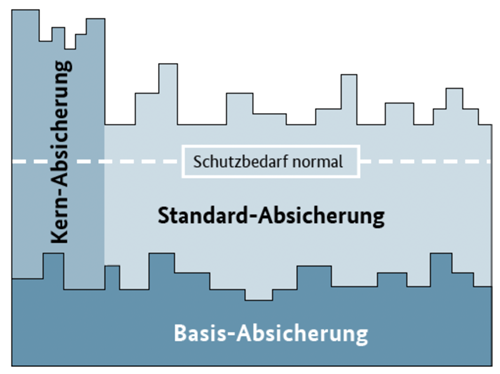
Im IT-Grundschutz bezieht sich die Strukturanalyse darauf, die Sicherheitsarchitektur zu verstehen und zu bewerten, um Schwachstellen zu identifizieren. Das Gruppieren von Objekten bedeutet, ähnliche IT-Komponenten oder Daten zu kategorisieren, um effiziente Sicherheitsmaßnahmen zu implementieren und Bedrohungen besser zu priorisieren.
In der Strukturanalyse sollten ähnliche IT-Komponenten wie Hardware, Software, Daten und Netzwerkbereiche zusammengefasst werden, um eine effiziente Sicherheitsverwaltung zu ermöglichen.
Ein Geschäftsprozess ist eine Reihe von Aktivitäten zur Zielerreichung. Dazu gehören beispielsweise Dateneingabe, Verarbeitung, Überprüfung, Genehmigung, Kommunikation, Entscheidungsfindung, Produktion, Lieferung oder Kundenbetreuung. Die Erhebung dieser Prozesse hilft, Effizienz zu steigern, Risiken zu managen, Compliance sicherzustellen, Qualität zu sichern und kontinuierliche Verbesserungen vorzunehmen.
Eine "Anwendung" ist eine Softwarelösung. Zur Anwendung gehören typischerweise die Software selbst, zugehörige Dateien, Konfigurationseinstellungen, unterstützende Dokumentation und gegebenenfalls Datenbanken oder andere erforderliche Ressourcen. Erfasst werden normalerweise: Name, Zweck, Version, Anbieter, Plattform, Abhängigkeiten, Lizenz, Sicherheitsmerkmale und Risikobewertung.
Ein Netzplan ist eine grafische Darstellung von Projektaktivitäten und ihren Abhängigkeiten. Er dient dazu, den Projektablauf zu planen, zu organisieren und zu überwachen, indem er die zeitliche Abfolge und den Zusammenhang der Aufgaben visualisiert.
Zu den IT-Systemen zählen typischerweise Hardwarekomponenten wie Computer, Server, Netzwerkgeräte sowie Softwareanwendungen, Betriebssysteme, Datenbanken und die gesamte Infrastruktur, die zur Verarbeitung, Speicherung und Übertragung von Informationen verwendet wird. Darüber hinaus gehören auch die Menschen, Prozesse und Richtlinien, die zur Verwaltung und zum Betrieb dieser Systeme erforderlich sind, zu den IT-Systemen.
Für IT-Systeme sind Aufgaben wie Datenverarbeitung, Speicherung, Übertragung, Sicherheit, Wartung, Aktualisierung und Support erforderlich. Diese Aufgaben sind entscheidend für den effizienten Betrieb von IT-Systemen und die Bereitstellung von Diensten für Benutzer und Organisationen.
Räume werden erhoben, um die physischen Standorte von IT-Systemen, Geräten und Daten zu identifizieren. Dies hilft bei der Planung von Sicherheitsmaßnahmen, der Einrichtung von Infrastruktur, der Zuweisung von Ressourcen und der Durchführung von Wartungsarbeiten.
Das Ziel der Schutzbedarfsfeststellung ist es, den Schutz des betrachteten Informationsverbundes und die dem zugehörigen Zielobjekte, begründete und nachvollziehbare Einschätzungen des Schutzbedarfes und Zielobjekte welche mehr Sicherheit oder nur Standart-Anforderungen benötigen zu definieren.
Die Grundwerte der Schutzbedarfsfeststellung sind Vertraulichkeit, Integrität und Verfügbarkeit. Vertraulichkeit beschreibt die Gewährung von Sicherheit vertraulicher Information. Integrität beschreibt die Korrektheit der Informationen und der Funktionsweise von Systemen. Verfügbarkeit beschreibt die Erreichbarkeit und den Zugriff von Informationen und Systemen von autorisierten Benutzern.
Die drei Schutzbedarfskategorien des BSI IT-Grundschutzes sind:
Ein Schadensszenario ist eine negative Auswirkung auf eine Firma. Beispiele für Schadensszenarien sind:
Mit der Vererbung ist gemeint, dass sich der bestimmte Schutzbedarf der Geschäftsprozesse und der zugehörigen Informationen auf den Schutzbedarf der Anwendungen, IT-Systeme, Räume und Kommunikationsverbindungen vererbt.
Folgende Fälle lassen sich in der Vererbung am Beispiel von IT-Systemen unterscheiden:
Maximumprinzip
Die möglichen Schäden der relevanten Teilobjekte müssen in ihrer Gesamtheit betrachtet werden. Beispielsweise
müsste bei einem IT-System beleuchtet werden, welche Auswirkungen Schäden bei den darauf betriebenen Anwendungen
und den damit verarbeiteten Informationen haben. Diese Schäden bestimmen den nötigen Schutzbedarf der Objekte.
Kumulationseffekt
Werden mehrere Anwendungen bzw. Informationen auf einem IT-System verarbeitet, so ist zu überlegen, ob durch
Kumulation mehrerer Schäden auf einem IT-System ein insgesamt höherer Gesamtschaden entstehen kann, falls ja
erhöht sich der Schutzbedarf des Objektes.
Verteilungseffekt
Der Schutzbedarf kann niedriger sein als der Schutzbedarf der zugeordneten Anwendungen, wenn eine Anwendung mit
hohem Schutzbedarf auf mehrere Systeme verteilt ist und auf dem betreffenden IT-System nur weniger wichtige Teile
dieser Anwendung ausgeführt werden.
Sie sollten aus der Sicht der Anwender entwickelt werden.
Um ein Schadenszenario zu entwickeln sollte man sich die fragen,
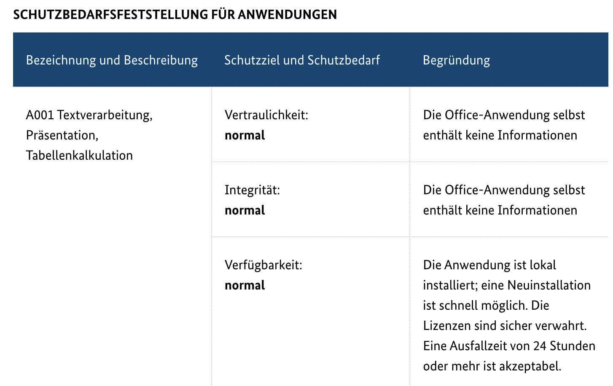
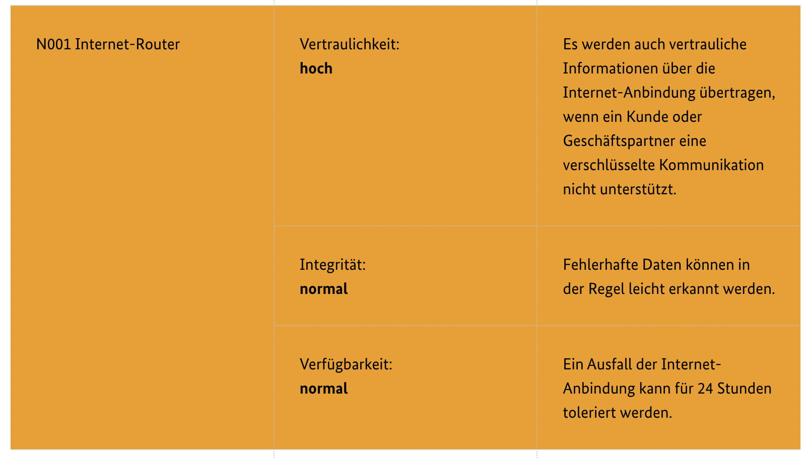
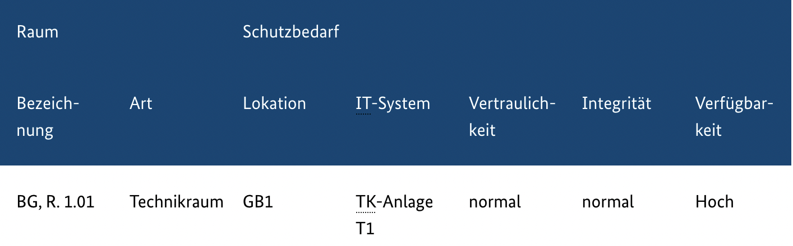
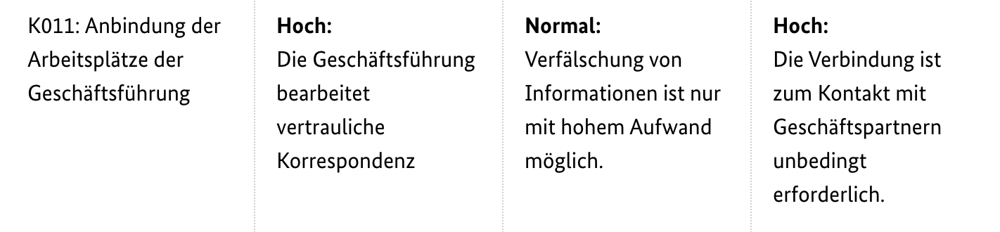
Eine Modellierung ist ein graphisches Abbild der Wirklichkeit, welches die wesentlichen Einflussfaktoren
anzeigt.
Der Prozess besteht aus:
Den Kern des IT-Grundschutz-Kompendium bilden die jeweils rund zehn Seiten langen
IT-Grundschutz-Bausteine. Diese beschreiben jeweils für einen bestimmten Aspekt der
Informationssicherheit typische Gefährdungen und Sicherheitsanforderungen. Die Bausteine können übergeordnete
Themen, wie das Informationssicherheits- oder Notfallmanagement oder auch spezielle technische Systeme, die
üblicherweise in Unternehmen und Behörden eingesetzt werden, enthalten.
Alle Bausteine sind gegliedert in:
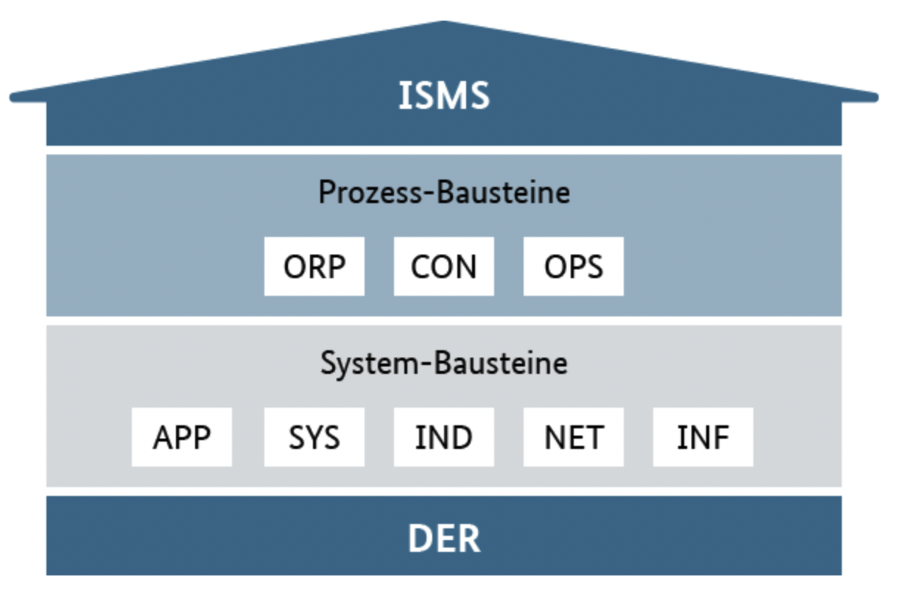
Die Einteilung der Bausteine im IT-Grundschutz-Kompendium bietet Vorteile wie die Reduzierung der Komplexität der Informationssicherheit und die Vermeidung von Redundanzen. Dies ermöglicht es, spezifische Aspekte eines Sicherheitskonzepts zu aktualisieren, ohne andere Teile zu beeinflussen. Die Schichten sind so gestaltet, dass sie spezifische Zuständigkeiten bündeln, wobei die Schichten ISMS und ORP das Sicherheitsmanagement, die Schicht INF die Haustechnik und die Schichten SYS, NET und APP die jeweiligen Verantwortlichen für IT-Systeme, Netze und Anwendungen adressieren.
Bei der Dokumentation der Modellierung werden alle benötigten Informationen angegeben. Diese Umfassen
Inhalt/Baustein, Zielobjekt, Relevanz und
Ansprechpartner.
Als Beispiel die Dokumentation der Modellierung
| Baustein (Ansprechpartner) | Zielobjekte | Relevanz | Begründung | Ansprechpartner |
|---|---|---|---|---|
| APP.5.2 Microsoft Exchange/Outlook | S004 | Ja | IT-Betrieb | |
| INF.1 Allgemeines Gebäude | GB1, GB2 | Ja | Haustechnik | |
| INF.2 Rechenzentrum sowie Serverraum | R002 | Ja | IT-Betrieb | |
| INF.4 IT-Verkabelung | Informations-verbund | Ja | ||
| INF.7 Büroarbeitsplatz | R008 bis R011 | Ja | ||
| INF.8 Häuslicher Arbeitsplatz | R099 | Ja | Die Vertriebsbüros werden wie Home Offices behandelt. | |
| IND.2.2 Speicherprogrammier-bare Steuerung (SPS) | I001 | Ja | ||
| SYS.1.5 Virtualisierung | S007 | Ja | IT-Betrieb | |
| SYS.3.1 Laptops | L001 bis L009 | Ja | IT-Betrieb | |
| OPS.3.1 Outsourcing für Dienstleister | Nein | Solche Dienste werden nicht angeboten. |
Maßnahmen sind angemessen, wenn sie wirksam, geeignet, praktikabel sind, Akzeptanz finden und auch wirtschaftlich eingeführt und betrieben werden können.
Ein Soll-Ist-Vergleich ist in der IT ein IT-Grundschutz Check ist ein effizientes Instrument zur Feststellung, ob eine Institution ihre Informationen und die gesamte Informationstechnik umfassend genug schützt.
Das IT-Grundschutz-Modell sollte mit den umgesetzten Sicherheitsmaßnahmen verglichen werden. Das ermöglicht den Vergleich zwischen dem erreichten Sicherheitsniveau und den relevanten Anforderungen.
Der Erfüllungsgrad kann in vier Stufen unterteilt werden:
Bewertung als:
Überprüfung für die RECPLAST GmbH
| Anforderung (Verantwortung) | Status | Umsetzung |
|---|---|---|
| ISMS.1.A1 Übernahme der Gesamtverantwortung für Informationssicherheit durch die Leitungsebene (Institutionsleitung) |
erfüllt | Die Geschäftsführung hat die Erstellung der Leitlinie initiiert. Die Leitlinie wurde von der Geschäftsführung unterzeichnet. Die Geschäftsführung hat die gesamte Verantwortung für das Thema Informationssicherheit übernommen und delegiert an den ISB die Umsetzung der geforderten Maßnahmen. Einmal monatlich erhält die Geschäftsführung einen Management- Report, kontrolliert den Umsetzungsstand der Maßnahmen, initiiert bei Bedarf weitere Maßnahmen und bewilligt das entsprechende Budget. |
| ISMS.1.A5 Vertragsgestaltung bei Bestellung eines externen Informationssicherheitsbeauftragten (Institutionsleitung) |
entbehrlich | Der Informationssicherheitsbeauftragte ist ein Mitarbeiter der RECPLAST GmbH. |
| ISMS.1.A7 Festlegung von Sicherheitsmaßnahmen (ISB) |
teilweise | Alle Mitarbeiter, die Maßnahmen im Sinne der Informationssicherheit umsetzen, sind verpflichtet, diese zu dokumentieren und dem ISB per E-Mail zuzusenden. Eine Auswertung und ausreichende Dokumentation der umgesetzten Maßnahmen gibt es nicht. Umsetzungszeitpunkt für ausführliche Dokumentation: 30.04. |
| ISMS.1.A11 Aufrechterhaltung der Informationssicherheit (ISB) |
erfüllt | Alle Dokumente und Prozesse werden einmal jährlich einem internen Audit unterzogen. Der ISB hat dafür die entsprechende fachliche Weisungsbefugnis für die Mitarbeiter, in deren Verantwortungsbereich einzelne Dokumente und Prozesse fallen. |
eine Risikoanalyse sollte für folgende Zielobjekte erfolgen:
Das grundlegende Verfahren zur Untersuchung von Sicherheitsgefährdungen und deren
Auswirkungen ist eine Risikoanalyse. Der BSI-Standard 200-3: Risikomanagement bietet
hierfür eine effiziente Methodik.
Zielobjekte sind Objekte, für die ein Schutzbedarf festgestellt werden soll. Ihnen
zugrunde sollten passsende IT-Grundschutzbausteine liegen.
Ausgehend von der Eintrittshäufigkeit und der Schadenshöhe kann eine Priorisierung
wie folgt aussehen:
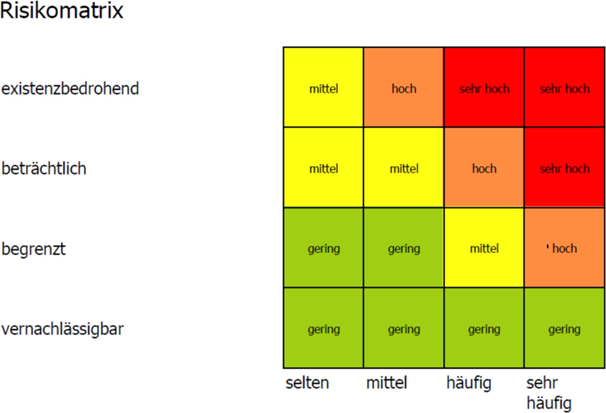
Risiken der Kategorie „gering“ werden grundsätzlich pauschal akzeptiert aber weiter
beobachtet. Risiken der Kategorien „mittel“, „hoch“ und „sehr hoch“ werden in der
Risikobehandlung mit eingebunden
Elementaren Gefährdungen erleichtert eine strukturierte Risikobeurteilung. Diese
können für die Risikoanalyse herangezogen werden,
Zum Beispiel durch moderierte Workshops.
Die Risikohöhe ergibt sich aus der Kombination aus der Häufigkeit einer Gefährdung
und der potenziellen Schadensauswirkung. Ein Risiko steigt mit der Häufigkeit der
Gefährdung und der Höhe des möglichen Schadens. Umgekehrt sinkt das Risiko, wenn
die Gefährdung weniger häufig auftritt oder der potenzielle Schaden geringer ist.
Selten: Das Ereignis könnte nach heutigem Kenntnisstand höchstens alle fünf Jahre auftreten.
Mittel: Das Ereignis tritt einmal alle fünf Jahre bis einmal im Jahr ein.
Häufig: Das Ereignis tritt einmal im Jahr bis einmal pro Monat ein.
Sehr häufig: Das Ereignis tritt mehrmals im Monat ein.
| Risikobewertung | Beschreibung |
|---|---|
| vernachlässigbar | Die Schadensauswirkungen sind gering und können vernachlässigt werden. |
| begrenzt | Die Schadensauswirkungen sind begrenzt und überschaubar. |
| beträchtlich | Die Schadensauswirkungen können beträchtlich sein. |
| existenzbedrohend | Die Schadensauswirkungen können ein existenziell bedrohliches, katastrophales Ausmaß annehmen. |
Das Risiko besteht darin, dass aufgrund des Ausfalls eines Servers die Daten auf einen
anderen Server migriert werden müssen, ohne Verschlüsselung aus Performance-
Gründen.
Die Migration erfolgt in einem separaten Netzwerk, auf das nur bestimmte
Administratoren Zugriff haben. Daher wird die Eintrittshäufigkeit als selten eingestuft.
Die zu migrierenden Daten sind äußerst sensible Geschäftsdaten, weshalb das Risiko
als beträchtlich betrachtet wird.
Aus dieser Bewertung ergibt sich ein insgesamt mittleres Risiko.
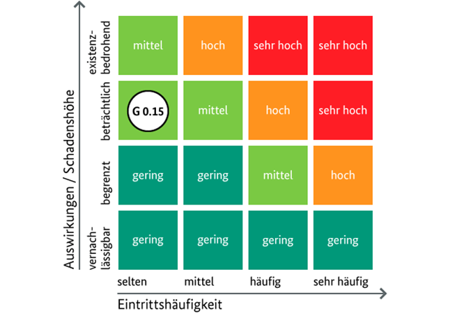
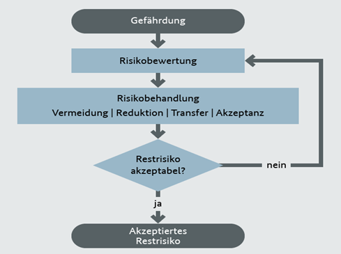
Grundsätzlich vier Möglichkeiten mit Risiken umzugehen:
| Gefährdung | Risikokategorie | Risikobehandlungsoptionen |
|---|---|---|
| G 0.15 Abhören | Mittel | Risikoakzeptanz (Risikoübernahme ohne zusätzliche Sicherheitsmaßnahme) Auf das Live-Migration-Netz dürfen nur befugte Administratoren zugreifen. Diesen wird vertraut. Das bestehende Restrisiko wird von der Example GmbH als vertretbar eingeschätzt und übernommen |
Nachdem unzureichend erfüllte Anforderungen aus dem IT-Grundschutz-Check und
eventuellen Risikoanalysen identifiziert wurden, werden Maßnahmen zur Schließung
dieser Sicherheitslücken festgelegt. Dabei werden auch die Maßnahmen im
Zusammenhang betrachtet, um überflüssige zu streichen und verbleibende zu
konkretisieren und anzupassen. Ziel ist es, den Realisierungsaufwand auf das
notwendige Maß zu begrenzen und eine zugeschnittene Liste von Maßnahmen zu
erhalten. Die Dokumentation der Entscheidungsgründe erleichtert die
Nachvollziehbarkeit.
Bei der Umsetzungsplanung geht es darum, die entstandenen Sicherheitslücken zu
schließen.
Maßnahmen konsolidieren: Zuerst filtert man nicht oder nur teilweise erfüllte
Anforderungen aus den Ergebnissen des IT-Grundschutz-Checks und Risikoanalysen
heraus. Dann prüft man, ob einige Maßnahmen überflüssig sind, ob andere konkretisiert
werden müssen und ob sie geeignet sind, ohne Arbeitsabläufe zu beeinträchtigen oder
die Schutzwirkung anderer Maßnahmen zu mindern.
Kosten und Aufwand schätzen: Man berechnet die Kosten für die Umsetzung und
präsentiert sie dem Management.
Umsetzungsreihenfolge festlegen: Priorisiert werden Aufgaben basierend auf dem
Schutzbedarf der Objekte.
Verantwortlichkeit regeln: Klärung der Zuständigkeiten und Termine für die Umsetzung,
in Absprache mit dem Management.
Begleitende Maßnahmen planen: Schulungen und Sensibilisierung der Mitarbeiter für
ihre Aufgaben, ohne an Investitionen zu sparen.
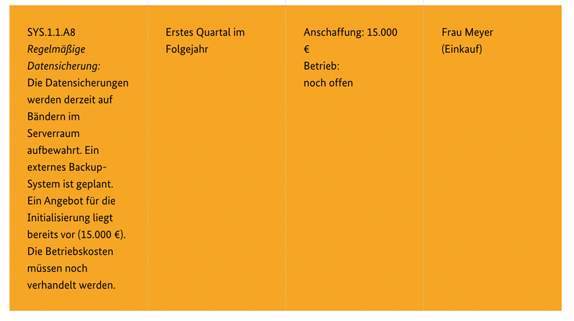
Um sicherzustellen, dass die Maßnahmen des Sicherheitskonzepts immer den Anforderungen entsprechen, müssen sie
kontinuierlich überprüft werden.
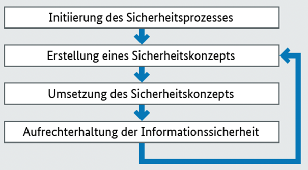
Die Bedeutung von Sicherheitszielen kann sich im Zeitablauf verändern. So kann es wichtiger werden, die Vertraulichkeit von Informationen zu schützen, wenn sich gesetzliche Rahmenbedingungen ändern oder aber die Institution mit Daten arbeitet, die dies verstärkt erfordern. Alle Maßnahmen zur Erhaltung der Vertraulichkeit müssen daher besonders sorgfältig geprüft werden. Eine weitere wichtige Frage ist, ob die gewählten Sicherheitsmaßnahmen noch der Gefährdungslage entsprechen. Auch ist zu prüfen, ob neue technische Verfahren einen effizienteren und wirksameren Schutz bieten können.
In komplexen Institutionen, wo der Informationssicherheitsbeauftragte (ISB) nicht alle Überprüfungen allein durchführen kann, ist es wichtig, dass für verschiedene Bereiche verantwortliche Personen benannt werden. Diese sollten die Sicherheitsmaßnahmen planen, umsetzen, dokumentieren und Verbesserungen steuern, wobei eine enge Zusammenarbeit und Informationsaustausch mit dem ISB essentiell ist.
Für weniger wichtige Schutzmechanismen kann eine Überprüfung seltener erfolgen als für kritische Prozesse. Mindestens einmal pro Jahr muss das Sicherheitskonzept darauf überprüft werden, ob es noch effektiv ist, also den Zielen der Informationssicherheit im Unternehmen oder der Behörde entspricht. Wenn es einen Sicherheitsvorfall gegeben hat, sollte dies Anlass für eine zusätzliche Prüfung sein.
Bewährte Verfahren zur Prüfung der Informationssicherheit umfassen:
Die Informationssicherheitsrevision (IS-Revision) ermöglicht es, das Sicherheitskonzept einer Institution gemäß einem festgelegten Verfahren von kompetenten Revisoren überprüfen zu lassen. Ziel ist es zu prüfen, ob das Konzept wie beabsichtigt umgesetzt wurde und den aktuellen Anforderungen entspricht. Die IS-Revision liefert belastbare Informationen über den aktuellen Zustand der Informationssicherheit sowohl für die Verantwortlichen als auch für die Leitung der Institution. Es gibt verschiedene Varianten der Revision, darunter umfassende Prüfungen, Kurzrevisionen, Querschnittsrevisionen und Partialrevisionen, je nach Tiefe und Umfang der Überprüfung.
Die Ergebnisse aller Überprüfungen müssen dokumentiert und der Leitung mitgeteilt werden. Dabei sind Informationen über den Stand der Umsetzung, Erfolge, Probleme sowie Risiken aufgrund von Umsetzungsmängeln wichtig. Bei Abweichungen von der Planung sollten Vorschläge erarbeitet werden, wie diese anzupassen oder die Umsetzung zu korrigieren ist. Gleiches gilt für Vorschläge zur Verbesserung und Weiterentwicklung der Sicherheitsmaßnahmen. Alle Entscheidungen hierzu, auch die Übernahme von Risiken durch eine verzögerte Umsetzung von Maßnahmen, müssen dokumentiert werden.
Der Maßstab für die "Reife" eines ISMS oder aber auch von Teilen davon ist der Grad der Strukturierung
und der systematischen Steuerung eines Prozesses. Dort wo der Reifegrad niedrig ist, besteht ein
besonderer Handlungsbedarf.
Folgende Tabelle zeigt ein Beispiel für die Definition von Reifegraden:
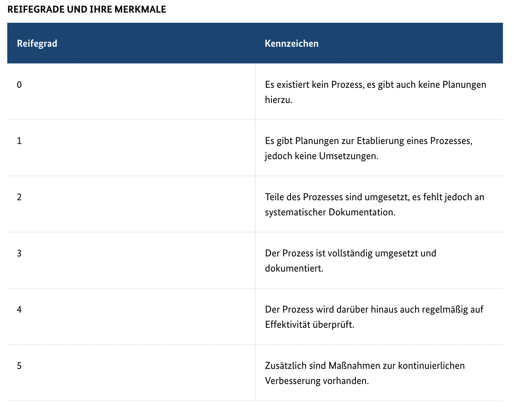
Die Zertifizierung des Managements für Informationssicherheit kann für unterschiedliche Zielgruppen interessant sein, zum Beispiel für:
Damit der Nachweis, für die Erfüllung der Anforderungen, erbracht werden kann, ist ein Audit durch einen vom BSI
anerkannten und unabhängigen Auditor nötig. Dieses Audit besteht aus 2 Phasen, der Dokumentenprüfung und der
Umsetzungsprüfung.
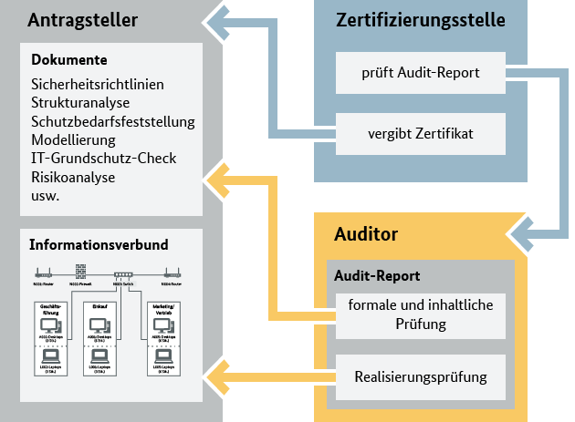
Quelle
Zum weiteren Nachlesen, ist diese Website vom BSI zu empfehlen.